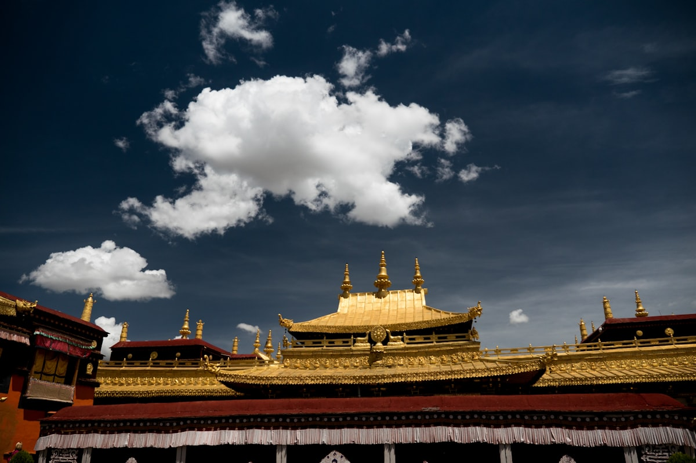
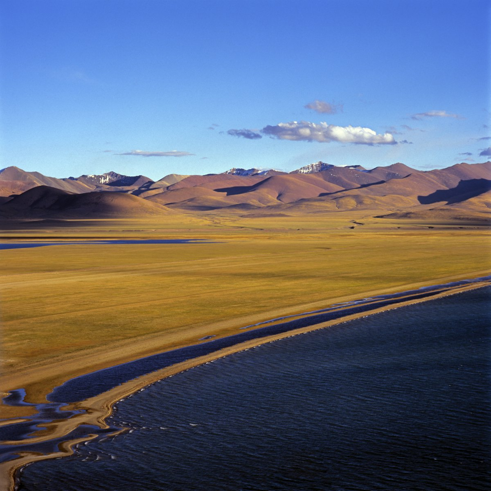
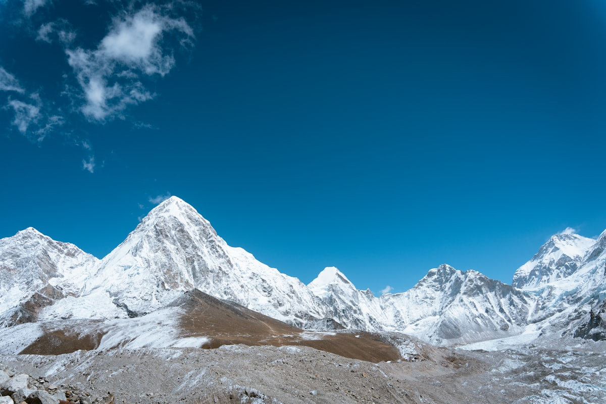
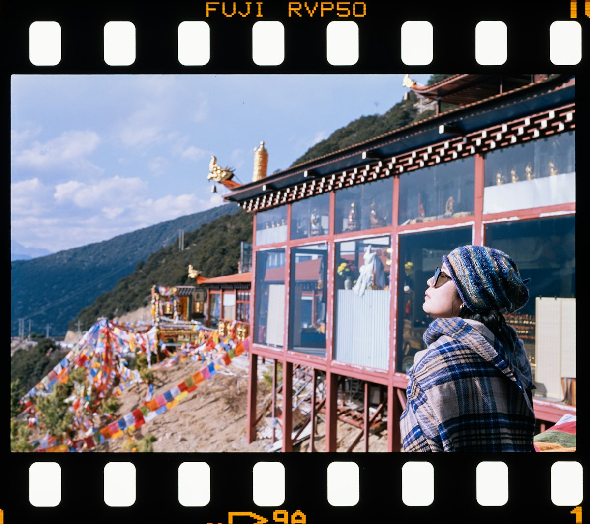
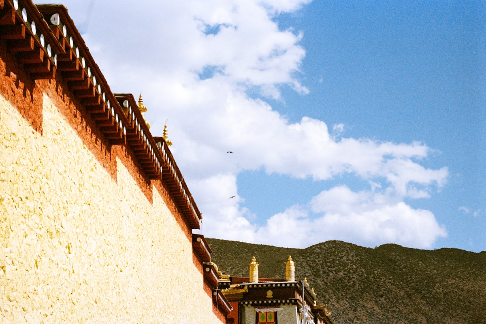

1核心结论
拉萨
→
纳木错
→
羊卓雍措
→
日喀则
→
珠峰大本营
→
返程
🕐 10 天怎么安排最合理
西藏是「离天空最近的地方」，拉萨是几乎所有行程的起点。前 2 天在拉萨适应高反，第 3–4 天走纳木错与羊卓雍措两大圣湖，第 5–8 天沿拉萨—日喀则—珠峰大本营的经典线看世界之巅，最后回拉萨缓冲后返程。全程以包车/拼车为主，海拔逐渐爬升最稳妥。
| 事项 | 结论 |
|---|---|
| 事项 | 结论 |
| 推荐方案 | 10 天 9 晚（拉萨 5 晚 + 日喀则 2 晚 + 珠峰大本营 1 晚 + 途中 1 晚） |
| 返程约束 | 第 10 天从拉萨返程 |
| 行程链 | 拉萨 → 纳木错 → 羊卓雍措 → 日喀则 → 珠峰大本营 → 拉萨 |
| 预算（人均） | 经济 5000–6500 ／ 标准 8000–10000 ／ 舒适 13000–17000 |
| 三件提前事 | ① 布达拉宫门票提前 7–10 天预约 ② 边防证提前在户籍地/拉萨办理 ③ 高原药品与氧气瓶备足 |
| 季节提醒 | 5–10 月最佳；7–8 月雨季雨多，4/5/9/10 月天气最稳 |
| 交通卡 | 拉萨市内公交+打车；环线包车/拼车为主 |
⚠️ 高反是第一道关卡
① 拉萨海拔 3650 米，落地前 24 小时别洗澡、别跑跳、别喝酒，多喝水多休息；② 布达拉宫实名预约分时段，旺季一票难求，提前 7–10 天抢。心脑血管疾病者请慎重上珠峰（5200 米）。
2推荐行程 · 10 天版
以下为 10 天 9 晚的推荐节奏。整体「拉萨适应 → 圣湖 → 珠峰线 → 拉萨返程」，海拔循序渐进。
| 日期 | 行程 | 过夜地 | 主题 |
|---|---|---|---|
| D1 抵拉萨 | 机场/火车站进城，酒店静休适应高反 | 拉萨 | 适应日 |
| D2 | 布达拉宫（上午）→ 药王山观景台 → 罗布林卡 | 拉萨 | 布宫日 |
| D3 | 大昭寺 + 八廓街转经 → 色拉寺辩经 | 拉萨 | 信仰日 |
| D4 | 纳木错一日（圣象天门视开放情况） | 拉萨 | 圣湖日 |
| D5 | 羊卓雍措一日 → 卡若拉冰川 | 拉萨 | 圣湖日 2 |
| D6 | 拉萨→日喀则，扎什伦布寺 | 日喀则 | 后藏首府 |
| D7 | 日喀则→定日→珠峰大本营（晚观星空/日落） | 珠峰大本营 | 世界之巅 |
| D8 | 珠峰日出 → 返回日喀则 | 日喀则 | 返程线 |
| D9 | 日喀则→拉萨，八廓街补拍 + 伴手礼 | 拉萨 | 收尾 |
| D10 返程 | 上午拉萨市区自由活动，下午返程 | — | 返程 |
🧭 路线可调原则
体力有限可把 D4/D5 两个圣湖合并取舍（纳木错车程更远、海拔更高）；珠峰大本营住宿（帐篷/绒布寺招待所）条件简单，怕苦可选 D7 当晚返回定日县城住酒店。
3逐小时时间线
以下为 10 天全程的逐小时执行时间线，可当作「当天打开照着走」的清单。标注 ※ 的可选项视体力与天气取舍。
D1 · 抵达拉萨
适应高反首日
🚇 抵达日
| 时间 | 事项 |
|---|---|
| 12:00–16:00 | 抵达拉萨（贡嘎机场/拉萨站），机场大巴/出租车进城 |
| 16:30–18:00 | 入住（推荐八廓街周边），静卧休息 |
| 18:30–20:00 | 轻量活动：八廓街外围漫步（别走太快），晚饭清淡 |
| 20:30 | 早睡，保证睡眠对抗高反 |
首日千万别洗澡、别喝酒、别剧烈运动；若头痛明显，酒店多备有供氧设备。
D2 · 布达拉宫
布宫日
🏛 布宫日
| 时间 | 事项 |
|---|---|
| 08:30–12:00 | 布达拉宫（参考价 200 元，需提前预约）：白宫红宫、法王洞，世界文化遗产 |
| 12:30–13:30 | 午餐：藏面、甜茶 |
| 14:00–15:00 | 药王山观景台（免费）：50 元人民币同款机位 |
| 15:30–18:00 | 罗布林卡（参考价 60 元）：达赖夏宫，藏式园林 |
| 19:00 | 晚餐：藏餐（糌粑、酥油茶、牦牛肉） |
布宫限时限人，提前 7–10 天在「布达拉宫票务预订系统」预约；爬布宫台阶慢一点，量力而行。
D3 · 大昭寺 + 色拉寺
信仰日
🙏 信仰日
| 时间 | 事项 |
|---|---|
| 08:30–11:00 | 大昭寺（参考价 85 元）：释迦牟尼 12 岁等身像，藏传佛教圣地 |
| 11:00–13:00 | 八廓街（免费）：转经道 + 手工艺品，玛吉阿米等老店 |
| 14:30–17:00 | 色拉寺（参考价 50 元）：辩经场下午 3 点开始，场面生动 |
| 18:00 | 晚餐后早点休息 |
八廓街顺时针转经；想拍藏服写真的可安排在 D3 上午，光线最好。
D4 · 纳木错
圣湖日
🌊 纳木错日
| 时间 | 事项 |
|---|---|
| 07:00 | 出发（拉萨→纳木错约 4.5 小时车程） |
| 12:00–15:00 | 纳木错（参考价 120 元）：海拔 4718 米世界最高咸水湖，扎西半岛看湖 |
| 15:00–19:30 | 返程回拉萨，途中那根拉山口（海拔 5190 米）打卡 |
| 20:00 | 晚餐，好好休息 |
纳木错一天往返较累、海拔高，易高反者建议改期或加吸氧；圣象天门目前多处于关闭状态，以官方为准。
D5 · 羊卓雍措
圣湖日 2
🌊 羊湖日
| 时间 | 事项 |
|---|---|
| 08:00 | 出发（拉萨→羊湖约 2 小时车程） |
| 10:30–13:30 | 羊卓雍措（参考价 60 元）：「天鹅之湖」，环湖观景台 4998 米 |
| 14:00–16:00 | 卡若拉冰川（远观）：《红河谷》取景地 |
| 17:00 | 返回拉萨 |
| 19:00 | 晚餐：牦牛火锅 |
羊湖比纳木错车程短一半、海拔略低，是「第一站圣湖」首选；观景台风大，注意保暖。
D6 · 日喀则
后藏首府一日
🏯 日喀则日
| 时间 | 事项 |
|---|---|
| 08:30 | 拉萨→日喀则（旅游大巴约 5 小时，或火车约 3 小时） |
| 14:00–17:00 | 扎什伦布寺（参考价 100 元）：班禅驻锡地，世界最大铜佛强巴佛 |
| 18:00 | 晚餐：后藏风味，宿日喀则 |
| 19:30 | 晚餐后早休息；日喀则海拔 3836 米，注意保暖防高反 |
拉萨—日喀则火车（约 3 小时）比大巴舒服且省时；扎寺下午光线好，适合慢慢转。
D7 · 珠峰大本营
世界之巅一日
🗻 珠峰日
| 时间 | 事项 |
|---|---|
| 07:00 | 日喀则出发，经定日县城午餐（全程约 8–9 小时） |
| 12:00 | 定日午餐（海拔 4300 米） |
| 15:30–17:00 | 珠峰国家公园（参考价 180 元+环保车 120 元）：绒布寺、珠峰大本营纪念碑（海拔 5200 米） |
| 19:00 | 珠峰日落金山 + 星空银河 |
| 21:00 | 宿大本营帐篷/绒布寺招待所 |
边防证必带（定日检查站查验）；大本营海拔 5200 米，氧气、药品随身，动作放慢。
D8 · 珠峰返程
返程线
🛣 返程日
| 时间 | 事项 |
|---|---|
| 07:00 | 珠峰日出（云海/金山，拼人品） |
| 09:00 | 返程，沿途雪山群峰 |
| 15:00 | 回到日喀则 |
| 18:00 | 晚餐，宿日喀则（洗个热水澡缓一缓） |
若前一晚睡眠差、高反明显，可提前 1 天下撤；回程注意检查站不要带违禁品。
D9 · 回拉萨
收尾一日
🎁 收尾日
| 时间 | 事项 |
|---|---|
| 08:30 | 日喀则→拉萨（火车/大巴约 3–5 小时） |
| 14:00–17:00 | 八廓街补拍 + 买伴手礼（唐卡、藏香、藏红花） |
| 18:30 | 晚餐：藏式晚餐收尾 |
| 20:00 | 整理行李，确认返程交通与氧气准备 |
伴手礼推荐：藏香、藏红花、唐卡（机印款）、牦牛肉干、转经筒小挂件。
D10 · 返程
回家
🚄 返程日
| 时间 | 事项 |
|---|---|
| 08:30–11:30 | 自由活动：布达拉宫广场补拍白天的蓝天白云 |
| 11:30–12:30 | 午餐 |
| 13:00–16:00 | 退房，赴贡嘎机场/拉萨站返程 |
| 16:30 | 抵达出发地，结束西藏 10 天行程；到低海拔后注意醉氧 |
贡嘎机场离市区约 60km，机场大巴约 1 小时；航班建议订下午，留足时间。
4景点图鉴
必去（必去）/ 顺路（顺路）/ 可跳过（可跳过）。
必去
布达拉宫 参考价 200 元
世界海拔最高宫殿，白宫红宫，需提前 7–10 天预约。

必去大昭寺 参考价 85 元
释迦牟尼 12 岁等身像所在，藏传佛教最高圣地。

必去纳木错 参考价 120 元
世界最高咸水湖（4718 米），圣湖之首。
 必去
必去羊卓雍措 参考价 60 元
「天鹅之湖」，湖水随光变色，观景台 4998 米。

必去珠峰大本营 参考价 180+120 元
世界之巅（5200 米），看金山日落与星空银河。
 顺路
顺路扎什伦布寺 参考价 100 元
班禅驻锡地，强巴佛（世界最大铜佛）。

顺路八廓街 免费
拉萨转经道与手工艺街，老城烟火。

可跳过罗布林卡 参考价 60 元
达赖夏宫，藏式园林，世界文化遗产。
图片为 Unsplash 主题图（布达拉宫、纳木错、珠峰等为西藏实景），用于页面配图。更多免费景点：药王山观景台、宗角禄康公园、拉萨河畔、哲蚌寺。
5路线地图
点击左侧节点可在地图上定位；点击地图 marker 会高亮对应节点。坐标为 WGS-84 转 GCJ-02 纠偏后标注。
6预算明细（三档）
以下为单人、不含购物的估算；门票为参考价，以现场为准。西藏旅行大头在交通（机票/包车）与边防证办理，旺季（6–8 月）价格明显上浮。
| 项目 | 经济（5000–6500） | 标准（8000–10000） | 舒适（13000–17000） |
|---|---|---|---|
| 往返交通 | 飞机/火车 1500–2200 | 飞机 2200–3500 | 飞机+商务舱 4000–6000 |
| 省内包车/拼车 | 拼车 1500–2500 | 包车 3000–4500 | 独立包车 6000–9000 |
| 住宿（9 晚） | 青旅/客栈 900–1400 | 连锁/藏式 2000–3000 | 星级/景观房 5000–7000 |
| 门票 | 基础景点约 800 | 含珠峰环保车等 1100 | 全含 1500+ |
| 餐饮（10 天） | 800–1000 | 1500–1900 | 2500–3500 |
💰 标准档示例账单（人均约 9700 元）
往返 2800 + 包车拼车 3500 + 住宿 9 晚 2000（双人分 4000）+ 门票 1100 + 餐饮 1600 + 杂费 400 ≈ 9700 元。旺季机票与珠峰住宿是主要浮动项。
7备选方案
7.1 拉萨周边 6 天版
- D1 适应高反
- D2 布达拉宫+大昭寺
- D3 罗布林卡+色拉寺
- D4 纳木错
- D5 羊卓雍措
- D6 返程
7.2 深游阿里版
资深玩家可加 10 天走阿里南线：冈仁波齐转山、玛旁雍错、扎达土林与古格王朝，但全程平均海拔 4500 米+，需极强体力与时间，属进阶行程。
7.3 雨季调整版
7–8 月雨季珠峰方向常云雾遮蔽，若时间灵活，可把珠峰段换到 9 月中旬后；或改走林芝方向（低海拔 2900 米），看南迦巴瓦与桃花（4 月）。
8交通与住宿
8.1 西藏 ⇄ 各地 交通
| 方式 | 时长 | 参考价 | 备注 |
|---|---|---|---|
| 飞机 | 视出发地 2–5h | 600–3000 元 | 拉萨/林芝/日喀则机场，旺季贵 |
| 青藏铁路 | 西宁—拉萨约 20h | 硬卧 500–800 元 | 火车进藏可逐步适应海拔，票紧张 |
| 自驾（滇藏/川藏） | 5–10 天 | 油费+食宿 | 高原险路，资深老司机专属 |
⚠️ 交通核心提醒
进藏最常见是飞机直飞拉萨或火车走青藏线；区内交通以包车/拼车为主，拉萨—日喀则可坐火车（约 3 小时）。珠峰方向必须包车（或参加纯玩团），边防证随身带好。
8.2 区内交通
- 拉萨市区：公交 1–2 元 + 打车（起步约 10 元）
- 拉萨—日喀则：火车约 3h（推荐）/旅游大巴约 5h
- 纳木错/羊湖：拼车或一日游团（人均 200–400 元）
- 珠峰线：包车 3–4 天（2000–4500 元/车）
- 机场大巴：贡嘎机场—市区约 30–40 元
8.3 住宿区域推荐
| 区域 | 价格/晚 | 优点 | 短板 |
|---|---|---|---|
| 八廓街周边 | 客栈 250–500 | 近大昭寺与转经道 | 老房隔音一般 |
| 拉萨市区酒店 | 快捷 300–600 / 星级 600–1200 | 供氧设施齐全 | 旺季紧张 |
| 日喀则市区 | 客栈 200–450 | 离扎寺近 | 选择少于拉萨 |
| 珠峰大本营 | 帐篷/招待所 150–300 | 看星空日出 | 海拔高、条件简单 |
9美食清单
🍽 必吃经典
- 藏面、甜茶、酥油茶
- 牦牛肉、藏式火锅
- 糌粑、藏包子（夏馍馍）
- 酸奶（牦牛酸奶）
🥮 伴手礼
- 藏香、藏红花
- 唐卡（机印款）
- 牦牛肉干
- 转经筒挂件、绿松石饰品
🍢 特色体验
- 甜茶馆（光明港琼等）
- 八廓街小吃（藏面+甜茶）
- 藏式餐厅看歌舞表演
- 藏香/唐卡工坊体验
📍 去哪吃
- 八廓街周边（藏餐集中）
- 北京东路（老字号）
- 甜茶馆（本地人生活）
- 珠峰营地（简餐+自热饭）
⚠️ 美食防坑
① 初到高原饮食清淡，别猛吃辛辣与重油；② 酥油茶可助适应高反，但乳糖不耐者慎饮；③ 景区餐饮贵且简单，珠峰线提前备干粮。
10出行贴士
10.1 行前清单
- 身份证 + 边防证（珠峰线必带）
- 红景天/高原安、氧气瓶
- 防晒霜 50+、墨镜、润唇膏
- 保暖衣 + 羽绒服（珠峰 0℃ 以下）
- 布达拉宫提前 7–10 天预约
- 大昭寺等门票提前购
- 包车/拼车提前 1 周订
- 首日不洗澡不喝酒不跑跳
10.2 防踩坑
🧳 高反与安全四条
① 高反是概率事件，别轻视也别恐慌，氧气+休息即可缓解，严重时立即下撤就医；② 边防证务必提前办好；③ 珠峰大本营住宿极简，自备睡袋与药品；④ 尊重宗教习俗，转经顺时针，不指佛像。
🌟 一句话总结
西藏是「眼睛的天堂，身体的地狱」——布达拉宫看信仰、纳木错看圣湖、珠峰看世界之巅。海拔再高，也挡不住这片土地带来的震撼。10 天把拉萨、圣湖与珠峰走完，放慢脚步、敬畏自然，就是最好的打开方式。